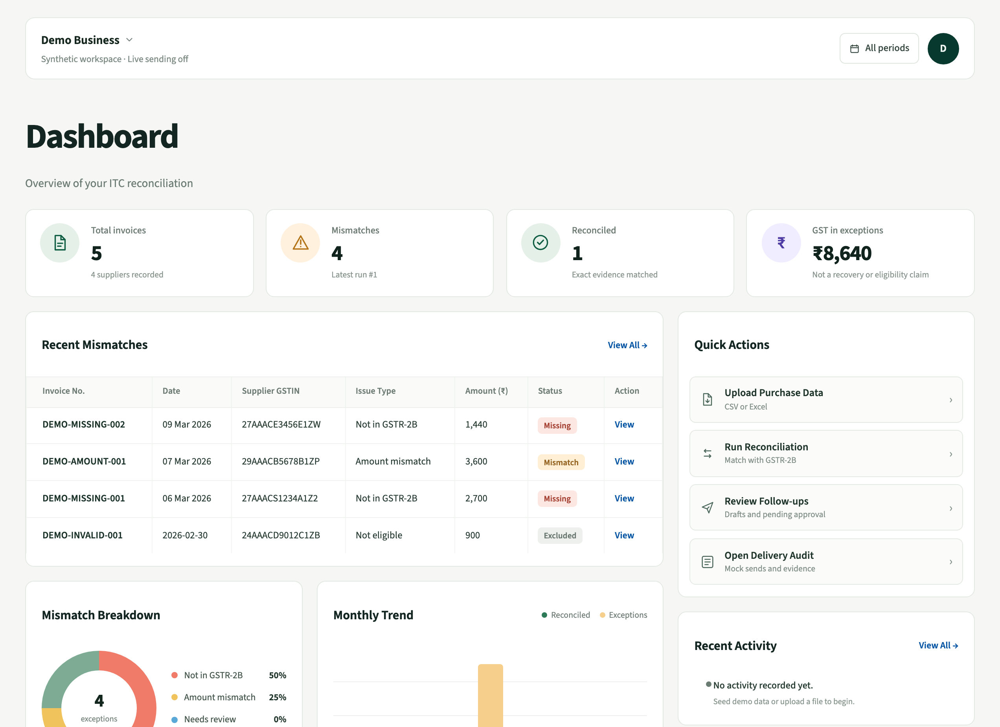
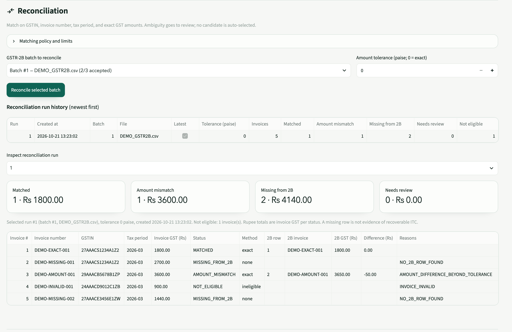
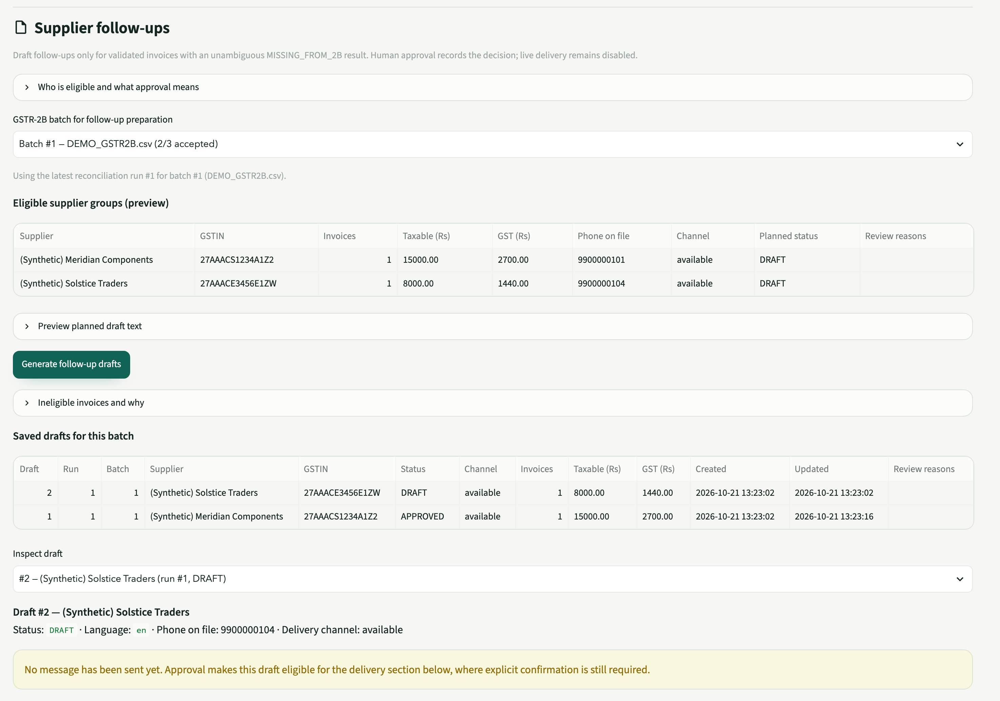

GST reconciliation assistant
Know which invoices
need attention.
MILAAN compares purchase invoice records with GSTR-2B data, highlights discrepancies, and helps your team organize the next step.
Runs locally with synthetic records. No account required.

Exact evidence first. Matching uses supplier GSTIN, invoice number, tax period and GST amounts.
Human review stays explicit. Follow-up drafts require confirmation before they can move to delivery review.
Every step leaves a record. Imports, runs, draft events and decisions are persisted in SQLite.
A reconciliation record, not a black box.
Review the exact invoice and GSTR-2B evidence behind each result. When the evidence is ambiguous, MILAAN flags it for review instead of choosing a candidate automatically.

What the result says
-
Matched
The selected GSTR-2B batch contains an exact counterpart for the invoice.
-
Amount mismatch
The invoice and GSTR-2B entry differ in total GST. The difference is shown in the evidence table.
-
Missing from 2B
The selected batch has no usable counterpart. This is a prompt to review, not a conclusion about the supplier.
-
Needs review
Duplicate or ambiguous evidence requires a human decision. No candidate is auto-selected.
-
Not eligible
The invoice is not valid or cannot be matched under the current rules.
Example from the synthetic demo: 5 invoices, 1 matched, 1 amount mismatch, 2 missing, 1 not eligible.
From purchase file to a reviewed follow-up.
The workflow stays deterministic and legible. You can see what was imported, how it was matched and what a person approved.
-
01
Upload purchase invoices
Add supplier and invoice records through the application. Validation checks required fields, GSTIN structure, rates and arithmetic.
-
02
Import GSTR-2B
Upload a normalized CSV or XLSX file. Accepted rows are staged, and rejected rows stay in the row-level audit trail.
-
03
Review the result
Compare matched, mismatched, missing and review-required invoices against the selected GSTR-2B batch.
-
04
Prepare follow-ups
Draft supplier messages only for eligible, unambiguous missing rows. A person reviews and approves each draft.
Current importer scope: MILAAN's normalized CSV and XLSX schema, plus common accounting-export column labels. Compatibility with every native GST portal export layout has not been established.
Built for the review, not just the total.
The product is deliberately narrow. Each capability supports a reconciliation record that a finance team can inspect.
Invoice validation
Input checks cover required fields, GSTIN syntax and checksum, tax rate, tax structure, arithmetic and duplicates.
Structured GSTR-2B imports
The importer accepts the documented normalized schema. Every source row is stored with its validation outcome.
Deterministic reconciliation
Matching is rule-based. Ambiguous candidates are flagged for review instead of selected automatically.
Discrepancy classification
Results are classified as matched, amount mismatch, missing from the selected batch, needs review or not eligible.
Supplier follow-up drafts
Drafts are prepared only for valid invoices with an unambiguous missing row. They remain editable until approved.
Human approval and audit history
Approval is recorded with a snapshot of the draft. Import, reconciliation and draft events remain reviewable.
Try the workflow with synthetic records.
The demo is the working Streamlit application, not a scripted mockup. It runs locally with a separate synthetic database.
- Purchase invoices5 synthetic records
- Validation4 valid, 1 invalid
- GSTR-2B import2 accepted, 1 rejected
- Reconciliation1 matched, 1 amount mismatch, 2 missing, 1 not eligible
- Follow-ups2 drafts, 1 approved, no message sent
Live WhatsApp delivery is disabled. No GST return is filed. All demo suppliers, GSTINs, phone numbers and amounts are fabricated.

Useful evidence, clearly bounded.
MILAAN helps a team decide what needs attention. It does not make the tax decision for them.
Read how the demo handles dataWhat MILAAN does
- Compares purchase invoice records with a selected GSTR-2B batch.
- Surfaces exact matches, differences, missing rows and cases needing review.
- Preserves import and reconciliation evidence.
- Prepares neutral supplier follow-up drafts for human approval.
- Records draft approval and audit history.
What it does not do
- Determine whether ITC is legally eligible or recoverable.
- Prove that a supplier has not filed a return.
- File GST returns or act as a tax adviser.
- Extract invoice data from photos or PDFs automatically.
- Send WhatsApp messages automatically or make trained ML predictions.
Questions, answered plainly.
What the current build does, what it does not do, and where a person still has to decide.
What does MILAAN do?
It compares purchase invoice records with imported GSTR-2B data, identifies discrepancies, stores the evidence and prepares supplier follow-up drafts for human review.
What is GSTR-2B?
GSTR-2B is a GST return statement that summarises input tax credit available to a registered buyer for a tax period. MILAAN uses an imported, normalized copy. It does not connect to the GST portal.
What happens when an invoice does not match?
MILAAN classifies it, for example as an amount mismatch, missing from the selected batch, or needing review. A missing match is a prompt to check the evidence, not a conclusion about the supplier or ITC.
Which files can I upload?
The current importer accepts a normalized CSV or XLSX schema with supplier GSTIN, invoice number, invoice date, tax period and tax amounts. Common accounting-export labels are also recognized. Every native portal export layout is not supported.
Does MILAAN file GST returns?
No. It does not file returns or connect to a government filing system.
Does it send WhatsApp messages automatically?
No. Follow-up drafts require human approval, and live WhatsApp delivery is disabled in this build. The demo can record mock delivery only.
Does a missing match mean I can claim ITC?
No. A missing match only means the selected GSTR-2B batch has no usable counterpart. It does not establish supplier non-filing, ITC eligibility or recoverability.
Is the demo using real business records?
No. Every supplier, GSTIN, phone number and amount in the demo is synthetic.